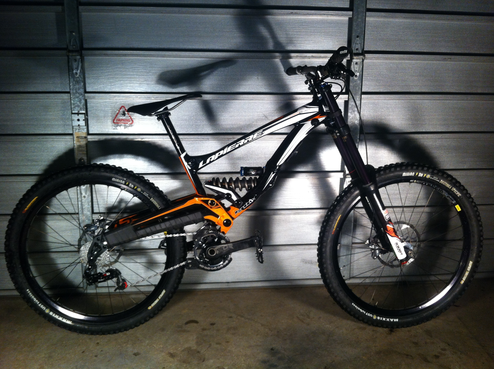
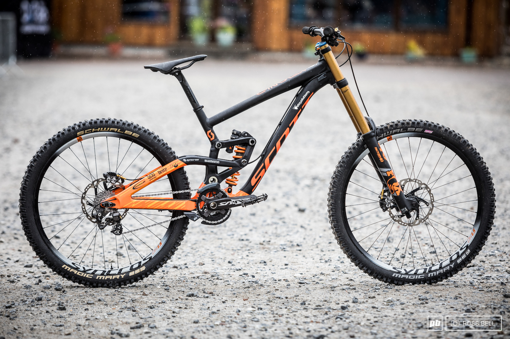
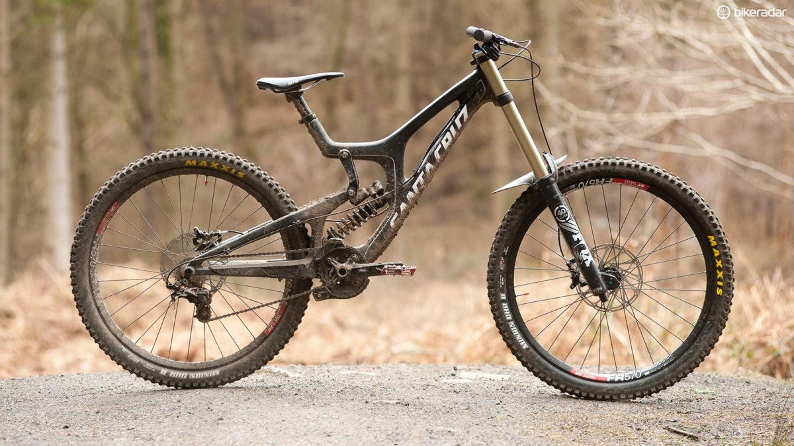

Just a really sexy guy who have a degree in accountant, but decided to come and spread his charme at Le Wagon Lisbon , while trying to learn a bit of web development in the mean time!
|  |
La Pierre DH720Lapierre's DH-720 is built around the same frame that is used by the Lapierre International DH Team and is designed as a race bike to get you down the mountain as quick as possible. |
|  |
Scott GamblerThe SCOTT Gambler 710 is a no compromises DH weapon. This is the rig that SCOTT-Velosolutions riders Brendan Fairclough and Gaëtan Vigé rely on daily. With 27.5" wheels, a custom race tuned Kashima Coated FOX Suspension and World Cup podium proven components, this bike was built for speed. Equipped with a low and slack geometry and a tweaked leverage ratio, the Gambler 710 will be able to handle everything in front of you. Following our belief that for every track there is a correct tool, this bike has been designed to be able to be converted to run 26" wheels as well. |
|  |
Santa Cruz V10The Santa Cruz V10 is the winningest bike in downhill World Cup history. Born from racing, and more than adept at the bike park, the V10's lower-link-driven, VPP® suspension sports 216mm of VPP travel-yet pedals out of corners and down long motorway sections much more efficiently than you'd ever expect. |
This page has been coded during the FullStack program @LeWagon. That was probably the best experience of my entire life.
Pinkbike
Facebook
Instagram
GitHub